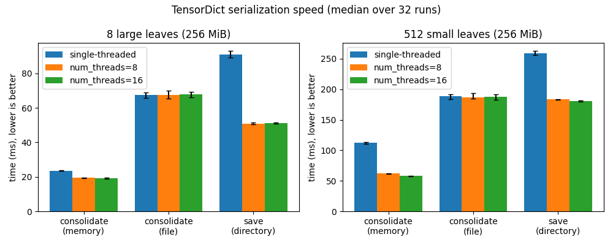
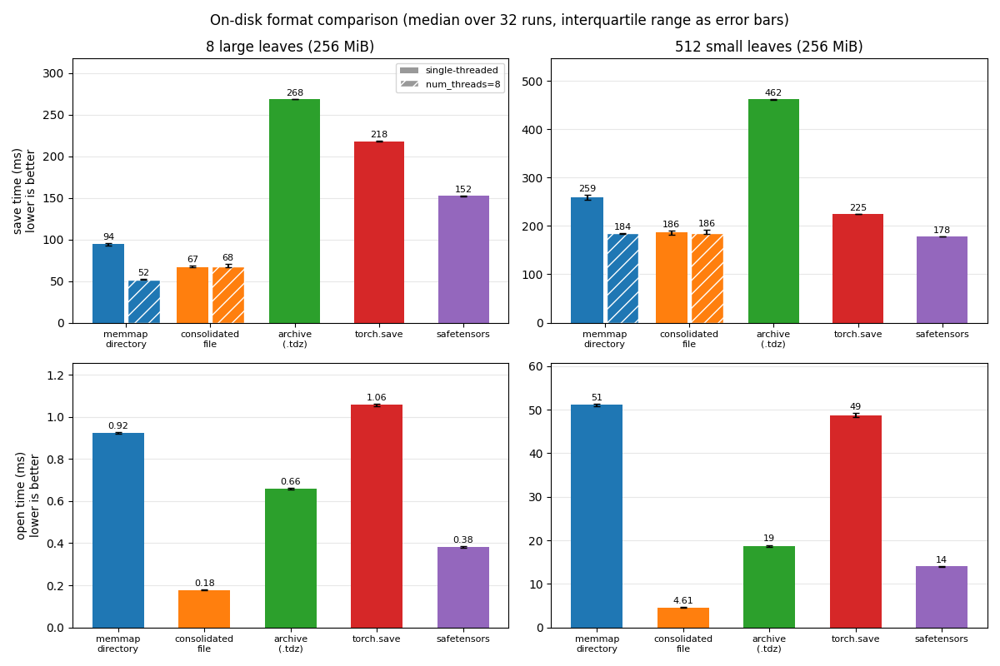

Note
Go to the end to download the full example code.
Benchmarking TensorDict serialization speed¶
Author: Vincent Moens
In this example you will learn how the main TensorDict serialization paths
compare in terms of speed, how num_threads affects each of them, and
how the on-disk formats compare with torch.save, safetensors and zarr.
The script runs each measurement 32 times and renders the median with the
interquartile range as error bars. It is executed during the documentation
build, so the figures below reflect the machine that built these docs;
download the script at the bottom of this page (or run
python tutorials/sphinx_tuto/serialization_speed.py from a tensordict
checkout) to measure your own hardware. The only extra dependencies are
matplotlib and, optionally, safetensors and zarr.
The first benchmark compares the write paths:
consolidate(): fuse all leaves into a single in-memory storage;consolidate()with afilename: fuse all leaves into a single memory-mapped file;save(): write one memory-mapped file per leaf in a directory tree.
Each method is measured single-threaded and with 8 and 16 threads, on two
layouts of the same kind of payload: a few large leaves and many small
leaves. The .tdz archive does not appear in this first benchmark: its
writer is a single sequential pass and takes no num_threads argument;
it is covered by the second benchmark, which compares the on-disk formats
(memmap directory, consolidated file, .tdz archive, torch.save,
safetensors, zarr) on saving (single- and multithreaded where supported)
and opening.
from __future__ import annotations
import importlib.util
import os
import shutil
import tempfile
import time
from pathlib import Path
import matplotlib.pyplot as plt
import numpy as np
import torch
from matplotlib.patches import Patch
from tensordict import TensorDict
_has_safetensors = importlib.util.find_spec("safetensors") is not None
try:
import zarr as _zarr
_has_zarr = int(_zarr.__version__.split(".")[0]) >= 3
except ImportError:
_has_zarr = False
Benchmark configuration¶
The default payload is 256 MiB per layout, small enough for a
documentation build while large enough for threading effects to show;
SCALE scales it linearly (e.g. SCALE=4 for 1 GiB). Every
measurement is repeated N_REPEATS times after one warmup run, and we
report the median with the interquartile range as error bars: disk writes
occasionally hiccup (page-cache writeback), which would dominate a mean.
SCALE = 1
N_REPEATS = 32
NUM_THREADS = 8
# Thread settings for the write-path benchmark: single-threaded, moderate,
# and oversubscribed on most machines -- the last one shows where the
# scaling saturates.
THREAD_COUNTS = (0, NUM_THREADS, 2 * NUM_THREADS)
LAYOUTS = {
# 8 leaves of 32 MiB each (per unit of SCALE)
"8 large leaves": TensorDict(
{f"key{i}": torch.randn(SCALE * 8 * 2**20) for i in range(8)}
),
# 512 leaves of 512 KiB each (per unit of SCALE)
"512 small leaves": TensorDict(
{f"key{i}": torch.randn(SCALE * 2**17) for i in range(512)}
),
}
def summarize(times):
"""Returns the median and the (lower, upper) distances to the 25th/75th percentiles."""
q25, median, q75 = np.percentile(times, [25, 50, 75])
return median, (median - q25, q75 - median)
The serialization methods¶
Each method returns the path it wrote (or None for the in-memory
variant) so that the benchmark loop can clean up between runs.
def make_methods(td, tmpdir):
counter = iter(range(1_000_000))
def consolidate(num_threads):
td.consolidate(num_threads=num_threads)
def consolidate_to_file(num_threads):
filename = Path(tmpdir) / f"consolidate{next(counter)}.td"
td.consolidate(filename=filename, num_threads=num_threads)
return filename
def save(num_threads):
prefix = Path(tmpdir) / f"save{next(counter)}"
td.save(prefix, num_threads=num_threads)
return prefix
return {
"consolidate\n(memory)": consolidate,
"consolidate\n(file)": consolidate_to_file,
"save\n(directory)": save,
}
def cleanup(path):
"""Removes a written artifact and flushes the writeback backlog.
Runs outside the timed region: it keeps disk usage bounded and, more
importantly, makes the runs independent. Without it, dirty pages from
earlier runs accumulate and the operating system throttles later
writes, which inflates both the timings and their spread.
"""
if path is None:
return
if path.is_dir():
shutil.rmtree(path)
else:
path.unlink()
if hasattr(os, "sync"):
os.sync()
Running the benchmark¶
For each method, the single-threaded and multithreaded runs are interleaved rather than run in two separate batches: repeated writes make the filesystem progressively slower (page-cache fill, writeback backlog), and interleaving spreads that drift equally over both settings.
results = {}
for layout_name, td in LAYOUTS.items():
with tempfile.TemporaryDirectory() as tmpdir:
for method_name, method in make_methods(td, tmpdir).items():
times = {num_threads: [] for num_threads in THREAD_COUNTS}
for num_threads in times: # warmup
cleanup(method(num_threads))
for _ in range(N_REPEATS):
for num_threads in times:
t0 = time.perf_counter()
path = method(num_threads)
times[num_threads].append((time.perf_counter() - t0) * 1000)
cleanup(path)
for num_threads, values in times.items():
results[layout_name, method_name, num_threads] = summarize(values)
Plotting¶
One panel per layout; within each panel, one group of bars per method (single-threaded, 8 and 16 threads), with the interquartile range as error bars.
fig, axes = plt.subplots(1, len(LAYOUTS), figsize=(5 * len(LAYOUTS), 4), sharey=False)
total_bytes = {
name: sum(v.numel() * v.element_size() for v in td.values(True, True))
for name, td in LAYOUTS.items()
}
for ax, layout_name in zip(axes, LAYOUTS):
methods = [m for (l, m, n) in results if l == layout_name and n == 0]
x = np.arange(len(methods))
width = 0.8 / len(THREAD_COUNTS)
offsets = (np.arange(len(THREAD_COUNTS)) - (len(THREAD_COUNTS) - 1) / 2) * width
for offset, num_threads in zip(offsets, THREAD_COUNTS):
label = "single-threaded" if num_threads == 0 else f"num_threads={num_threads}"
medians = [results[layout_name, m, num_threads][0] for m in methods]
errors = np.array([results[layout_name, m, num_threads][1] for m in methods]).T
ax.bar(x + offset, medians, width, yerr=errors, capsize=3, label=label)
ax.set_xticks(x, methods)
ax.set_ylabel("time (ms), lower is better")
size_mb = total_bytes[layout_name] / 2**20
ax.set_title(f"{layout_name} ({size_mb:.0f} MiB)")
ax.legend()
fig.suptitle(f"TensorDict serialization speed (median over {N_REPEATS} runs)")
fig.tight_layout()
plt.show()

Reading the results¶
A few rules of thumb emerge (see the docstring of
consolidate() for details):
In-memory consolidation is by far the fastest path (no disk write on the timed path).
num_threadshelps when the leaves are large (the data is copied by contiguous chunks of roughly equal byte size, one fused copy per thread) but with many small leaves the copy is already cheap and the per-chunk overhead can outweigh the gain.When consolidating to a memory-mapped file, threads are only used when the data needs a device change (e.g. CUDA to CPU): concurrent writes to a fresh file mapping are slower than a single sequential copy on most local filesystems, so
num_threadsis ignored in that case.The per-leaf directory format (
save()) pays a per-file cost, which dominates with many small leaves whatever the thread count.Thread scaling saturates quickly: past the point where the storage bandwidth is the bottleneck, extra threads (the 16-thread bars) buy little or regress slightly from per-task overhead.
Absolute numbers depend heavily on the filesystem and the state of the
page cache: benchmark on your own storage before picking a strategy, and
prefer larger payloads (SCALE=4 or more, i.e. 1 GiB+) for stable
measurements.
Choosing an on-disk format¶
The second benchmark compares the on-disk formats tensordict can write –
the per-leaf memmap directory, the consolidated single file and the
.tdz zip archive – with torch.save and, when installed,
safetensors and zarr. torch.save and safetensors are measured on
their fastest paths: a flat dict of tensors, written with torch.save
/ save_file and reloaded with torch.load(mmap=True,
weights_only=True) / the mmap-backed load_file. They do not
represent tensordict structure natively, so keys are flattened at save
time and the nesting is rebuilt at load time. zarr goes through
to_zarr() /
from_zarr() with its default layout
(one uncompressed chunk per leaf); unlike the other formats it does not
memory-map its payload, so open is lazy but bulk reads pay a copy.
Two operations are timed. Save writes a fresh artifact (removed
outside the timed region); the tensordict formats that take a
num_threads argument – the memmap directory and the consolidated
file – are measured single-threaded and multithreaded (the archive
writer is a single sequential pass by design, and torch.save /
safetensors have no threading knob). Open constructs a lazy tensordict
over an existing artifact: every format here memory-maps its payload, so
this is a metadata and view-construction cost – bulk read throughput is
essentially identical across formats once open. Copying the artifact is
not plotted: it is a plain filesystem operation, and single files
trivially win it (a directory pays per-file latency, which grows with
the number of leaves and with round-trip time on network filesystems).
def make_formats(td, tmpdir):
"""Maps format name -> (save(num_threads) -> path or None, open(path))."""
base = Path(tmpdir)
counter = iter(range(1_000_000))
def fresh(suffix):
return base / f"artifact{next(counter)}{suffix}"
def save_dir(num_threads):
prefix = fresh("")
td.save(prefix, num_threads=num_threads)
return prefix
def open_dir(path):
TensorDict.load_memmap(path)
def save_consolidated(num_threads):
filename = fresh(".td")
td.consolidate(filename=filename, num_threads=num_threads)
return filename
def open_consolidated(path):
TensorDict.from_consolidated(path)
def save_archive(num_threads):
if num_threads:
return None # the archive writer is sequential by design
filename = fresh(".tdz")
td.save(filename)
return filename
def save_pt(num_threads):
if num_threads:
return None
filename = fresh(".pt")
torch.save(dict(td.flatten_keys(".").items()), filename)
return filename
def open_pt(path):
flat = torch.load(path, mmap=True, weights_only=True)
TensorDict(flat, batch_size=[]).unflatten_keys(".")
formats = {
"memmap\ndirectory": (save_dir, open_dir),
"consolidated\nfile": (save_consolidated, open_consolidated),
"archive\n(.tdz)": (save_archive, open_dir),
"torch.save": (save_pt, open_pt),
}
if _has_safetensors:
from safetensors.torch import load_file, save_file
def save_safetensors(num_threads):
if num_threads:
return None
filename = fresh(".safetensors")
save_file(dict(td.flatten_keys(".").items()), filename)
return filename
def open_safetensors(path):
TensorDict(load_file(path), batch_size=[]).unflatten_keys(".")
formats["safetensors"] = (save_safetensors, open_safetensors)
if _has_zarr:
def save_zarr(num_threads):
if num_threads:
return None
filename = fresh(".zarr")
td.to_zarr(filename)
return filename
def open_zarr(path):
TensorDict.from_zarr(path)
formats["zarr"] = (save_zarr, open_zarr)
return formats
def bench_format(save, open_):
"""Times save (single/multithreaded) and open for one format."""
out = {}
probe = save(NUM_THREADS)
threaded = probe is not None
cleanup(probe)
settings = (0, NUM_THREADS) if threaded else (0,)
times = {num_threads: [] for num_threads in settings}
for num_threads in settings: # warmup
cleanup(save(num_threads))
for _ in range(N_REPEATS):
# single- and multithreaded runs are interleaved, as above
for num_threads in settings:
t0 = time.perf_counter()
path = save(num_threads)
times[num_threads].append((time.perf_counter() - t0) * 1000)
cleanup(path)
out["save"] = summarize(times[0])
if threaded:
out["save_mt"] = summarize(times[NUM_THREADS])
# open operates on a single saved artifact
artifact = save(0)
open_(artifact) # warmup
times = []
for _ in range(N_REPEATS):
t0 = time.perf_counter()
open_(artifact)
times.append((time.perf_counter() - t0) * 1000)
out["open"] = summarize(times)
cleanup(artifact)
return out
format_results = {}
for layout_name, td in LAYOUTS.items():
with tempfile.TemporaryDirectory() as tmpdir:
for format_name, (save, open_) in make_formats(td, tmpdir).items():
format_results[layout_name, format_name] = bench_format(save, open_)
One row per operation, one panel per layout, one bar (or one single/multithreaded pair) per format, with the median time printed above each bar. The panels use independent linear scales – the printed values are what makes bars comparable across panels.
def format_ms(value):
return f"{value:.2f}" if value < 10 else f"{value:.0f}"
def draw_bar(ax, x, result, color, width=0.38, hatch=None):
median, err = result
(bar,) = ax.bar(
x,
median,
width,
yerr=np.array([err]).T,
capsize=3,
color=color,
hatch=hatch,
edgecolor="white" if hatch else None,
).patches
ax.annotate(
format_ms(median),
(bar.get_x() + bar.get_width() / 2, median + err[1]),
textcoords="offset points",
xytext=(0, 3),
ha="center",
fontsize=8,
)
fig, axes = plt.subplots(2, len(LAYOUTS), figsize=(6 * len(LAYOUTS), 8), sharey=False)
for j, layout_name in enumerate(LAYOUTS):
names = [f for (l, f) in format_results if l == layout_name]
x = np.arange(len(names))
for i, operation in enumerate(("save", "open")):
ax = axes[i, j]
for k, name in enumerate(names):
result = format_results[layout_name, name]
color = plt.cm.tab10.colors[k]
if operation == "save" and "save_mt" in result:
draw_bar(ax, k - 0.21, result["save"], color)
draw_bar(ax, k + 0.21, result["save_mt"], color, hatch="//")
else:
draw_bar(ax, k, result[operation], color, width=0.6)
ax.set_xticks(x, names, fontsize=8)
ax.margins(y=0.18)
ax.grid(axis="y", alpha=0.3)
ax.set_axisbelow(True)
if j == 0:
ax.set_ylabel(f"{operation} time (ms)\nlower is better")
if i == 0:
size_mb = total_bytes[layout_name] / 2**20
ax.set_title(f"{layout_name} ({size_mb:.0f} MiB)")
axes[0, 0].legend(
handles=[
Patch(facecolor="0.6", label="single-threaded"),
Patch(
facecolor="0.6",
hatch="//",
edgecolor="white",
label=f"num_threads={NUM_THREADS}",
),
],
fontsize=8,
)
fig.suptitle(
f"On-disk format comparison "
f"(median over {N_REPEATS} runs, interquartile range as error bars)"
)
fig.tight_layout()
plt.show()

The single-file formats (consolidated, archive, torch.save,
safetensors) open with a single metadata parse, while the directory pays
a per-file cost that dominates with many small leaves. Saving is
bandwidth-bound for every format, with per-entry overheads showing in
the many-small-leaves layout; the threaded bars show where
num_threads pays off. Keep in mind that the tensordict formats carry
nested structure, lazy stacks, non-tensor data and (for directories and
archives) in-place writability, which the flat external formats do not.
Further reading¶
The saving documentation covers the full serialization API, including
memmap_likeandreturn_early.The benchmark suite in
benchmarks/common/memmap_benchmarks_test.pytracks these operations withpytest-benchmark, andbenchmarks/scripts/serialization_formats_bench.pyruns a larger offline version of the format comparison (bigger payloads, more layouts, read timings).
Total running time of the script: (8 minutes 23.144 seconds)